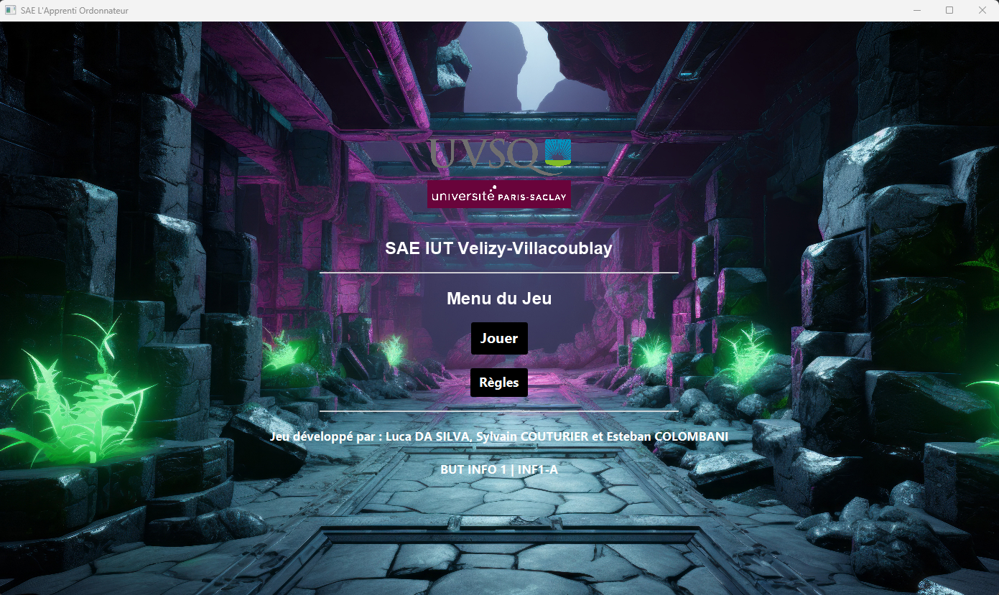
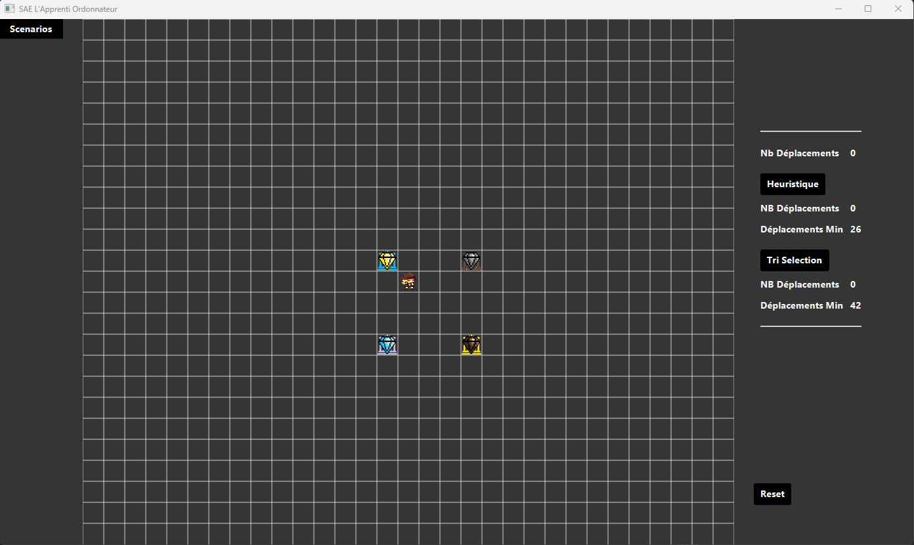
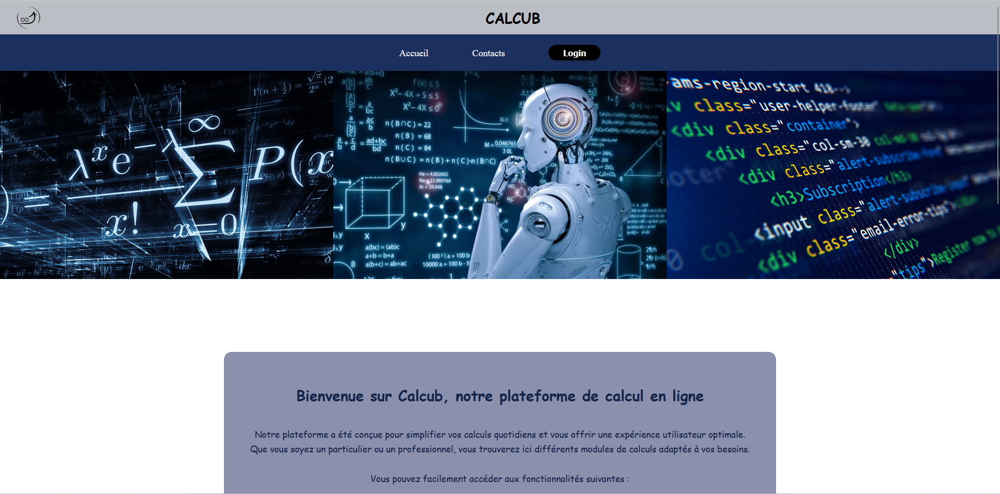
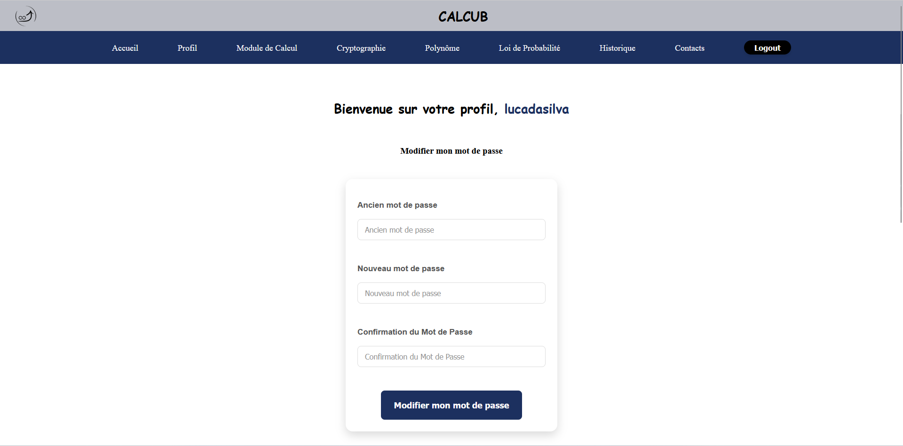

Mes Projets
Vous pouvez trouver certains de mes projets sur mon GitHub : juste ici
Installation et configuration de postes de travail sous Linux
Ce projet consistait à préparer et configurer un poste de travail sous Linux en partant de zéro. Pour cela, j’ai d’abord créé une clé USB bootable avec une distribution Linux adaptée, puis j’ai procédé à l’installation complète du système sur le poste. Ensuite, j’ai mis en place un environnement de développement en installant les outils essentiels, dont Docker, permettant de gérer des conteneurs applicatifs pour des déploiements simplifiés et isolés. Enfin, j’ai effectué des configurations spécifiques du poste, incluant la gestion des utilisateurs, les réglages de sécurité et l’optimisation des performances du système.
Développement d'un jeu en Java
Ce projet consistait à réaliser un jeu interactif en Java. L'utilisateur pouvait choisir son scénario et avait pour objectif de replacer les cristaux dans leurs temples respectifs le plus rapidement possible. Dans ce projet, je devais également implémenter deux algorithmes spécifiques : le tri heuristique et le tri par sélection. Comme on peut le voir sur les images ci-dessous, j'ai implémenté un menu d'accueil lors du lancement du jeu afin d'accéder ensuite à l'interface du jeu.


Analyse de données avec Excel et Oracle SQL
Dans ce projet, j’ai conçu et géré une base de données Oracle SQL en respectant un modèle relationnel structuré. Une fois les données stockées et organisées, j’ai réalisé une analyse approfondie via des requêtes SQL complexes, permettant d’extraire des informations précises et pertinentes. L’analyse des données a ensuite été poussée plus loin avec Excel, en utilisant des tableaux croisés dynamiques et des formules avancées pour générer des visualisations claires et compréhensibles. Enfin, j’ai créé des graphiques complexes pour interpréter les tendances et assurer une vérification rigoureuse des résultats obtenus grâce aux requêtes SQL.
Conception et réalisation d'une plateforme web dynamique en HTML, CSS, PHP et JavaScript installé sur un RPi
Ce projet avait pour but de développer une plateforme web permettant d’effectuer divers calculs mathématiques
et statistiques. Hébergée sur un serveur Apache/MySQL installé sur un Raspberry Pi, la plateforme prenait
en charge différents utilisateurs : administrateurs et visiteurs.
L’application web comportait plusieurs modules de calculs, notamment :
- Un module de probabilités : mise en place de la loi inverse gaussienne.
- Un module de cryptographie : implémentation de l’algorithme RC4, permettant de chiffrer et déchiffrer des données.
- Un module polynôme : calcul des racines réelles et complexes d’un polynôme.
- Gestion des utilisateurs : les administrateurs pouvaient ajouter des utilisateurs via un fichier CSV et exporter les données sous le même format.
- Sécurisation et gestion des accès : mise en place d’un système de connexion avec gestion des rôles et suivi des logs pour assurer la traçabilité des actions.
L’ensemble du projet était versionné sur GitHub et suivi par un cahier des charges précis. La plateforme devait être fonctionnelle, ergonomique et offrir une interface fluide pour les utilisateurs.
Vous pouvez trouver ce projet et le télécharger juste ici : ici

